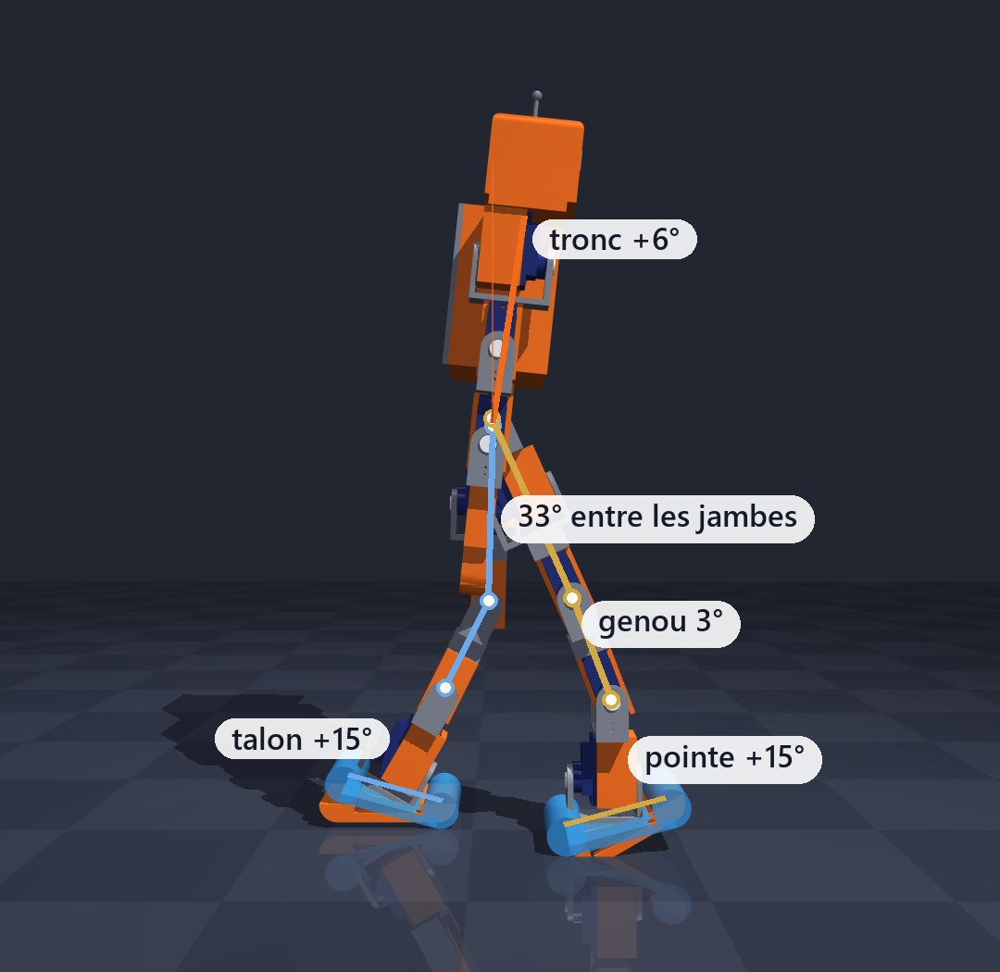
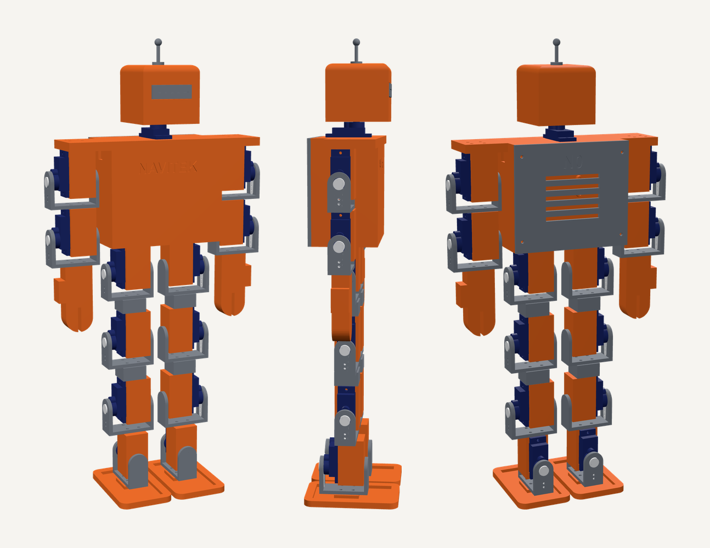
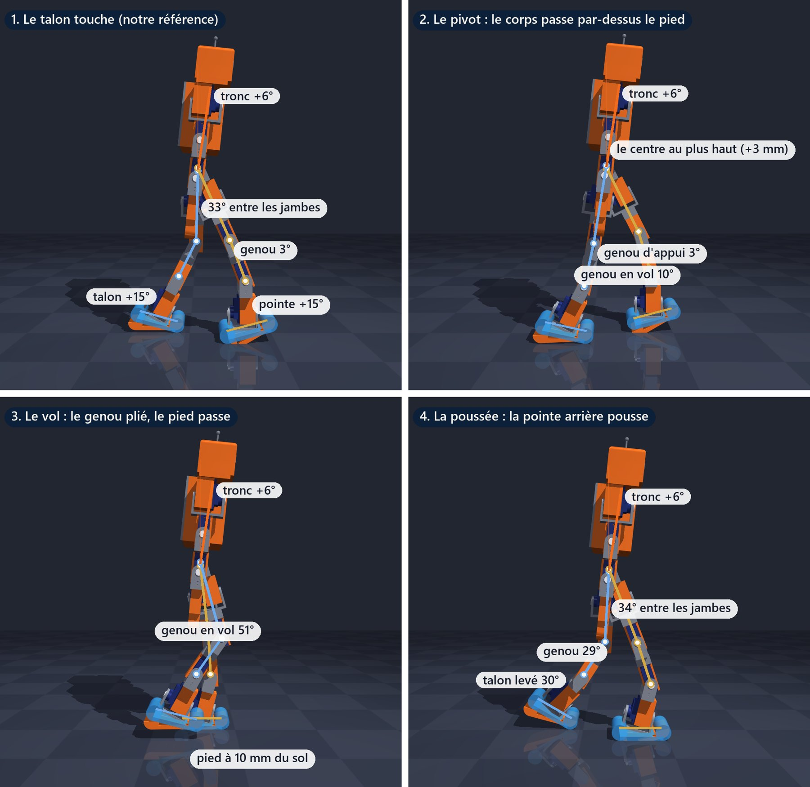

Navitek Robolabs · une thèse ouverte · version du 28 novembre 2026
Apprendre à marcher à un humanoïde imprimé
N0.1, 37 cm, dix-sept servos SG90 et une seule carte graphique : la recherche, ses données, ses films et ses erreurs, publiés au fur et à mesure.
Yoan Maisonneuve et Claude · Navitek Robolabs, YM IA Conseil, Grand Montréal · travail en cours, en simulation

Télécharger, pour s'en servir
Le modèle de marche le plus récent (version 2026.11.18.1, L20c-elan) et ses données : les poids, le même réseau en ONNX, le robot pour MuJoCo, le code et les 90 départs du banc. Licences ouvertes.
Le modèle (0,94 Mo) Les données (8,28 Mo) toutes les versions
RésuméRésumé
Peut-on apprendre à un humanoïde de 37 cm, imprimé en plastique et mû par dix-sept servomoteurs de modélisme de 9 g (des SG90, 0,18 N·m chacun), à marcher comme un humain : de grands pas, la jambe tendue quand le talon touche, le corps qui bascule par-dessus le pied ? Nous l'apprenons en simulation (MuJoCo), sur une seule carte graphique de bureau, par apprentissage par renforcement (PPO), en imitant une marche de référence tirée d'une photo d'un pas humain.
La méthode est celle d'un cahier de laboratoire tenu en public : chaque essai écrit sa prédiction avant de tourner et son verdict après (1 391 prédictions dans 195 cahiers : 454 confirmées, 113 en partie, 710 réfutées) ; toute mesure nouvelle passe d'abord sur un cas dont on connaît la réponse ; aucun résultat n'est annoncé avant d'avoir été vu en film. Un score de la marche, de 0 à 1, pèse quatre niveaux débloqués dans l'ordre : les grands pas, la vitesse, la fluidité, la sûreté.
Résultats, à ce jour et en simulation : une marche droite qui obéit à 2, 5 et 10 cm/s, un saut amorti depuis 6 cm, un escalier de cinq marches de 1 cm, et une marche qui atteint la cible : 44° entre les jambes et la jambe de devant posée tendue (le genou à 4,7°) à 10 cm/s, à la vitesse demandée, partie lancée dans le grand pas (score 0,95) ; elle marche aussi à 15 et 20 cm/s. Nous montrons aussi pourquoi notre première référence ne posait pas le talon jambe tendue (la cheville de N0.1 est près de l'avant de son pied) et comment la corriger. Vers la course, notre record est de 34,2 cm/s en ligne droite (26 robots debout sur 30) ; rapporté à sa taille par le nombre de Froude, c'est encore une marche lente, 2,5 km/h pour un humain de mêmes proportions. Quand on lui laisse monter la cadence, son pas raccourcit d'autant : c'est probablement la puissance des SG90 qui plafonne, et c'est ce que nous mesurons maintenant. Rien n'est encore imprimé : c'est la suite.
Mots-clés : humanoïde imprimé, marche bipède, apprentissage par renforcement, imitation, MuJoCo, servomoteurs SG90, science ouverte.
Chapitre 1Introduction
La question. Un humanoïde qu'on imprime chez soi, avec les servos les moins chers du commerce, peut-il apprendre une vraie marche, et pas seulement un pas traîné ? Les grands humanoïdes apprennent à marcher avec des moteurs puissants et des capteurs coûteux ; nous partons de l'autre bout : le robot le plus simple qu'on puisse imprimer, et toute la difficulté reportée dans l'apprentissage.
Pourquoi ouvert. Tout est publié au moment où c'est fait : les fichiers à imprimer, le code, les cahiers, les films, les erreurs. Un robot que tout le monde peut imprimer, refaire et vérifier ne reste dans l'ombre de personne.
Ce que cette thèse apporte.
- Un humanoïde de 37 cm dessiné par code (chaque pièce générée, vérifiée, tranchée), et son jumeau simulé aux masses et aux couples réels de ses servos.
- Une méthode pour apprendre la marche sur une seule carte graphique : l'imitation légère d'une référence tirée d'une photo, des récompenses données au moment précis du pas, un départ déjà lancé.
- Un protocole de chercheur tenu en public : la prédiction avant, le verdict après, le cas connu, le film avant l'annonce, et un score unique de la marche.
- Des résultats négatifs autant que positifs, et un registre des erreurs : ce qui ne marche pas est une donnée.
Statut : tout ce qui suit est simulé. Le premier gabarit imprimé et le premier vrai servo sont la prochaine étape.
Chapitre 2Ce qui existe
Les humanoïdes ouverts. Une part de la robotique humanoïde se publie ouverte : les bibliothèques d'apprentissage d'Unitree, MuJoCo Playground de Google DeepMind (sur MuJoCo Warp, comme notre tour), Open Duck Mini (un robot de 40 cm à servos du commerce, qui apprend à marcher en imitant une marche de référence), ToddlerBot (Stanford). Les plus avancés (Tesla, Boston Dynamics, Figure) restent fermés. Notre revue : R-179.
Apprendre un geste en l'imitant. DeepMimic a montré qu'un personnage simulé apprend un geste en suivant une référence, et qu'il apprend plus vite s'il commence au milieu du geste plutôt qu'au début (l'initialisation dans l'état de la référence). Nous reprenons les deux idées, et nous les poussons : un départ lancé, déjà à la vitesse de la marche (R-201).
La marche humaine. Les planches de Muybridge (1887) découpent un pas en images ; la mécanique de la marche le décrit comme un pendule inversé, où le corps bascule par-dessus la jambe d'appui, et le nombre de Froude dit quand deux marches de tailles différentes se ressemblent. À 5 cm/s, N0.1 marche environ 150 fois plus lentement qu'un humain au même nombre de Froude : un ralenti, où rien ne porte le corps sauf ses servos (R-194).
Chapitre 3Le robot

De N0 à N0.1. N0.1, décidé le 15 novembre, croise ses hanches et ses épaules en deux servos, pose ses pieds sur une semelle arrondie à 15° et ne porte que des SG90 : dix-sept servos de 9 g, 0,18 N·m chacun. Son jumeau simulé pèse chaque pièce, semelle comprise ; un résultat sur un robot qui n'est pas celui qu'on imprime ne compte pas.
Ce que la géométrie impose. La cheville de N0.1 est à 11 mm devant le centre de son pied. Posé sur le talon la pointe relevée, le pied de devant soulève sa cheville de 10 mm ; roulé sur sa pointe, le pied arrière ne soulève presque pas la sienne. C'est ce qui faisait plier le genou à la pose du talon, et c'est par le placement du pied qu'on l'a corrigé (chapitre 5).
Chapitre 4La méthode
4.1 La simulation
MuJoCo Warp sur une carte RTX 3060 Ti : 4 096 robots simulés en même temps, de 85 à 90 millions de pas par heure. Les servos y ont leur couple réel (0,1766 N·m), un retard de commande tiré au hasard et un filtre de 80 ms ; le sol, son adhérence. La file de la tour tourne jour et nuit, surveillée toutes les cinq minutes, toujours remplie pour plusieurs jours.
4.2 L'apprentissage
Un réseau de neurones de deux couches de 256 reçoit l'état du robot (ses angles, ses vitesses, la commande) et rend la consigne de ses servos, cinquante fois par seconde ; il apprend par PPO. Il imite une marche de référence tirée d'une photo d'un pas humain (R-190), refaite pour que N0.1 pose le talon jambe tendue (R-198), et il est payé au moment précis du pas : la pose de la photo à chaque pose du talon, la bascule par-dessus le pied (le pivot, R-197), la douceur des commandes, le tronc droit, la vitesse demandée.
4.3 Le protocole du chercheur
- La question et la prédiction écrites avant, dans un cahier numéroté (le numéro réservé par un script).
- Le cas connu : toute mesure ou récompense nouvelle passe d'abord sur un cas dont on connaît la réponse.
- L'essai court sur la tour : rien ne plante, et le monde simulé est bien celui qu'on croit.
- Le banc final : 30 départs à 2, 5 et 10 cm/s, le même juge pour tous, le verdict contre la prédiction.
- Le film regardé avant toute annonce.
- Tout publié : le cahier, le film, la recette de la marche mise à jour.
Le détail : les outils, les réglages de PPO, les 80 réglages de l'entraîneur et le nombre de pas de chaque test sont dans la méthode d'entraînement. Qui fait quoi entre Yoan et Claude, et ce que nous vérifions : la déclaration d'usage de l'IA.
4.4 Le score de la marche
Un seul nombre de 0 à 1 par marche apprise, la somme de quatre niveaux pondérés, débloqués dans l'ordre : les grands pas (λ 0,40 : 33° entre les jambes et le genou sous 10° quand le talon touche), la vitesse (0,25 : de 0,9 à 1,1 fois la vitesse demandée), la fluidité (0,20 : les à-coups des articulations et la régularité du bassin, mesurée par le SPARC), la sûreté (0,15 : 28 départs sur 30 debout). À côté du score, son coût : les millions de pas de simulation qu'il a fallu depuis zéro.
Chapitre 5Les résultats
5.1 Le score de chaque marche
| La marche | N1 grands pas | N2 vitesse | N3 fluidité | N4 sûreté | Score | Millions de pas |
|---|---|---|---|---|---|---|
| L20c-elan | 1,00 | 1,00 | 0,75 | 1,00 | 0,95 | 620 |
| L21c-court-vite | 1,00 | 1,00 | 0,71 | 0,93 | 0,93 | 740 |
| L22a-vite-30 | 1,00 | 1,00 | 0,76 | 0,82 | 0,93 | 860 |
| L27b-rebond-moins-imiter | 0,99 | 1,00 | 0,73 | 0,82 | 0,92 | 1 020 |
| L26a-temps-en-l-air | 1,00 | 1,00 | 0,74 | 0,75 | 0,91 | 940 |
| L27a-rebond | 0,98 | 1,00 | 0,71 | 0,82 | 0,91 | 940 |
| L22b-cadence-30 | 1,00 | 1,00 | 0,72 | 0,75 | 0,91 | 940 |
| L21d-court-sans-appuis | 1,00 | 0,94 | 0,60 | 0,96 | 0,90 | 740 |
| L25a-pousser-appui-simple | 1,00 | 0,92 | 0,68 | 0,86 | 0,90 | 820 |
| L21a-court | 1,00 | 0,74 | 0,71 | 1,00 | 0,88 | 700 |
| L25b-pousser-moins-imiter | 0,93 | 0,80 | 0,63 | 0,96 | 0,84 | 900 |
| L18-suite-400 | 0,87 | 0,74 | 0,70 | 0,86 | 0,80 | 540 |
| L24a-tomber-en-avant | 1,00 | 0,68 | 0,68 | 0,25 | 0,74 | 860 |
| L20a-pose | 0,73 | 0,91 | 0,44 | 0,79 | 0,73 | 620 |
| ref-c-zero | 0,53 | 1,00 | 0,46 | 1,00 | 0,70 | 120 |
| PZ-zero-400 | 0,44 | 0,98 | 0,58 | 1,00 | 0,69 | 400 |
| L23a-vrais-pieds | 1,00 | 0,77 | 0,00 | 0,57 | 0,68 | 820 |
| PZ-tendu | 0,44 | 0,78 | 0,70 | 1,00 | 0,66 | 100 |
| tendu-zero-400 | 0,41 | 1,00 | 0,46 | 1,00 | 0,66 | 400 |
| L19-pivot | 0,75 | 0,41 | 0,46 | 1,00 | 0,65 | 220 |
| photo-zero-genou | 0,44 | 0,97 | 0,34 | 1,00 | 0,64 | 60 |
| cible-zero | 0,41 | 0,98 | 0,38 | 1,00 | 0,63 | 120 |
| L20b-pose-ref | 0,61 | 0,76 | 0,38 | 0,82 | 0,63 | 620 |
| pivot-zero | 0,38 | 0,96 | 0,34 | 1,00 | 0,61 | 120 |
| L18b-tendue6 | 0,58 | 0,33 | 0,71 | 1,00 | 0,61 | 140 |
| ref-b-zero | 0,32 | 1,00 | 0,37 | 1,00 | 0,60 | 120 |
| elan-zero | 0,24 | 1,00 | 0,38 | 1,00 | 0,57 | 120 |
| tendue-zero | 0,28 | 0,88 | 0,31 | 1,00 | 0,54 | 120 |
| cible-PZ | 0,34 | 0,38 | 0,76 | 1,00 | 0,53 | 480 |
Un niveau est franchi quand il vaut 1. Les grands pas sont franchis par L20c-elan et L21c-court-vite et L22a-vite-30 et L26a-temps-en-l-air et L22b-cadence-30 et L21d-court-sans-appuis et L25a-pousser-appui-simple et L21a-court et L24a-tomber-en-avant et L23a-vrais-pieds, la première fois le 18 novembre. Les millions de pas comptent toute la lignée d'apprentissages.
5.2 La marche droite, apprise de zéro
5.3 Encaisser une chute, monter un escalier

5.4 Du glisseur au marcheur : le pivot
5.5 La référence refaite : la jambe tendue à la pose

5.6 Tourner : la vrille sur un pied et le T-test
5.7 La cible atteinte : partir lancé
Payer la pose visée ouvrait le pas, mais pliait le genou (L20a : 38,8° et le genou à 18° ; L20b, avec la référence refaite : le genou à 28°). L'idée de Yoan (R-201) : lancer une partie des départs déjà dans le grand pas, à la vitesse de la marche, « au lieu que le robot ait peur de tomber et ne fasse pas le pas assez loin ». Sur L18-suite-400, 80 millions de pas de plus : L20c-elan, à 10 cm/s, 44° entre les jambes et le genou à 4,7° quand le talon touche, 0,93 fois la vitesse, 29 départs sur 30 debout, 77 % du temps sur un seul pied ; à 5 cm/s, 41° et 4,9°. Au banc rapide : 0,90 fois la vitesse à 15 cm/s, 0,83 fois à 20 cm/s, et le temps sur les deux pieds qui raccourcit avec la vitesse (de 260 à 80 ms), comme chez l'humain. De zéro, l'élan ne suffit pas (elan-zero reste à petits pas) : il sert une marche qui fait déjà des pas.
5.8 La course : de 21,8 à 34,2 cm/s, et ce qui la plafonne
Le but posé par Yoan le 19 novembre : courir à deux fois sa taille par seconde (R-217). Le départ, L22a, tenait 21,8 cm/s. Trois jours et une cinquantaine d'apprentissages plus tard, le meilleur coureur propre, L41t, tient 28,8 cm/s pour 28 demandés, 28 départs sur 30 debout, en ligne droite (0,32 m de dérive en 10 s) : 0,77 fois sa taille par seconde. Le plus droit, L42d, tient 27,8 cm/s, 29 sur 30, avec 6 cm de dérive.
La fiche de l'athlète. Découpée comme un entraîneur découpe une course (R-217 § 35) : à 28 cm/s, 2,5 pas par seconde, des pas de 12 cm, 451 ms au sol, 335 en l'air, jamais les deux pieds en l'air. La marche d'un humain mise à l'échelle de sa jambe (le même nombre de Froude) demanderait, à 60 cm/s, 3,8 pas par seconde et des pas de 16 cm : une marche, pas encore une course.
L'horloge. Le robot suit la cadence de sa marche de référence au pour cent près, à toutes les vitesses, et choisit lui-même la longueur de son pas (R-217 § 37). Une horloge plus rapide est suivie (jusqu'à 3,2 pas par seconde : les SG90 le peuvent), mais le pas raccourcit d'autant, jusqu'à piétiner (3,7 cm par pas à 35 cm/s, figure 13). Ce qui plafonne la course n'est ni la cadence ni la foulée de la référence : c'est la longueur du pas que l'apprentissage trouve.
Corriger par le vecteur, pas par la direction. Le principe de Yoan (R-217 § 34) : ne pas payer le robot d'être sur la ligne, mais de la vitesse de côté qui l'y ramène. Mal codé (une cloche étroite, plate loin de la bonne correction), il n'a rien corrigé ; bien codé (une pente partout), il a tenu sa ligne et couru à 32,7 cm/s, notre record. Refait sur deux autres graines, ce record ne s'est pas refait : une chance sur trois (§ 43.1). Le principe tient ; sa preuve, pas encore.
Le penché. Pencher le tronc plus en avant ne l'a pas fait courir plus vite en régime (deux départs) ; au plafond, à 30 cm/s, le plus penché restait le plus souvent debout. Un penché qui grandit avec l'accélération demandée rend la marche lente qu'un penché fixe enlevait (§ 38.1).
Penché comme l'avion, et des chasses neuves. L'idée de Yoan (R-217 § 60) : courir le tronc incliné vers l'avant, comme un avion qui décolle. Repris tel quel, notre meilleur coureur perdait sa course ; penché, il la gardait. La nuit du 24 au 25 novembre a donné 33,25 cm/s tenus pour 28 demandés, 26 robots debout sur 30 (L73-avion-150109, § 61.1). La bonne usine s'est révélée être la chasse neuve : quatre minutes d'apprentissage par graine, la moitié des graines à 20 robots debout ou plus, aucune perdue sur 48. Elle a donné le record actuel, 34,19 cm/s pour 27 demandés, 26 debout sur 30 (L76-chasse-150150, § 62.1), encore fragile (11 debout seulement à 28). Et une règle : ne pas continuer une course qui a trouvé son grand pas. Au deuxième tour, l'apprentissage la ramène vers un petit pas sûr (de 13,8 à 8,1 cm).
À l'échelle humaine. Personne ne publie la vitesse d'un humanoïde rapportée à sa taille. La règle des animaux à pattes est le nombre de Froude, v² / (g × jambe) ; la jambe de N0.1 mesure 21,8 cm, celle d'un humain de mêmes proportions, 90 cm (R-217 § 64).
| N0.1 | Froude | Humain à l'échelle | |
|---|---|---|---|
| Le record (L76-chasse-150150) | 34,2 cm/s | 0,055 | 2,5 km/h |
| L'objectif (Yoan, 19 novembre) | 60 cm/s | 0,168 | 4,4 km/h |
| Là où un humain se met à courir | 103 cm/s | 0,5 | 7,6 km/h |
La règle le dit sans détour : 60 cm/s n'est pas une course, c'est une marche normale. Le pas y est presque (13,8 cm, contre environ 16,5 pour la marche humaine mise à l'échelle) ; c'est la cadence qui manque (2,4 pas par seconde, contre environ 3,7).
Ce qui plafonne maintenant. Desserrer peu à peu la borne de l'horloge (R-217 § 63 et 64) apprend au robot à rester debout sous une commande plus haute, et sa cadence monte (2,87 pas par seconde contre 2,5 au record), mais son pas raccourcit d'autant (10,1 cm contre 13) : il tient 28 cm/s, pas plus. Ce n'était pas l'horloge ; c'est probablement la puissance des SG90. Et le pied se pose trop loin (R-234) : 22 % au-delà du point de capture chez les records, 54 % sous l'horloge en rampe, si bien que chaque pas freine ; une gravité plus basse, essayée de 1 à 10 m/s², n'allonge pas le pas.
Le goulot, mesuré (le 26 novembre). Avec 25 % de couple en plus (le SG90 à 6 V), 18 à 24 robots sur 30 tiennent à 32 cm/s demandés, contre 0 ou 1 à 4,8 V (R-217 § 65.1) : le moteur bloque entre 28 et 32 cm/s. Lequel, et pourquoi : le genou, quand la jambe est en l'air. Nos coureurs le plient de 58° à chaque pas et le font tourner à 380-410°/s, là où le SG90, sur sa droite couple-vitesse, n'a plus que 19 à 25 % de son couple (R-239 § 6.1) ; la hanche et la cheville ont de la marge. Une vraie marche d'adulte (la base de capture de mouvement de Carnegie Mellon), mise à l'échelle de N0.1 au Froude de 60 cm/s, demanderait au genou 680-700°/s, plus que la vitesse à vide du servo (R-239 § 4) : N0.1 ne marchera pas comme un humain à 60 cm/s avec des SG90. Deux pistes en cours : un pas qui plie moins le genou (le pied lève 3 à 4 cm de plus qu'il ne faut, R-239 § 6.2) et deux SG90 en série au genou (l'idée de Yoan : la vitesse double, mais l'articulation devient deux fois plus molle, et la marche héritée tombe, R-239 § 5.1). Et un premier gain, à confirmer : les coudes tenus pliés à 45° (une autre idée de Yoan) donnent +2,8 cm/s à 28 cm/s demandés et plus de robots debout (R-217 § 68.1).
5.9 Le 27 novembre : une jambe neuve, le hasard, la référence, le réseau
N0.2, la jambe allongée (R-240). Le tibia allongé de 3,6 cm, la cheville plus basse, amenés peu à peu depuis les politiques de N0.1 : avec le hasard d'exploration de nos chasses (0,042), 9 graines sur 12 tombent ; avec plus de hasard (0,12), toutes tiennent, jusqu'à 36 cm/s demandés, mais à 26-32 cm/s. N0.2 garde la marche de N0.1 (le genou plié de 59° en l'air) : la jambe a changé, pas la façon de s'en servir.
Le hasard d'exploration (R-217 § 70 et 71). À 0,12 au lieu de 0,042, presque deux fois plus de robots tiennent (360 debout à 28 cm/s contre 205), mais la marche se fait prudente (3 cm/s de moins) ; un hasard qui redescend au fil de l'apprentissage rend presque toute la vitesse et garde la tenue à 28 cm/s.
Les coudes pliés (R-217 § 69). Sur 24 graines, 2 cm/s et 1,2 cm de pas de plus, sans perte de tenue : adoptés dans la recette.
La marche de référence (R-243). Notre référence ne dépassait jamais 31 cm/s (sa foulée s'arrêtait à 22 cm). Prolongée jusqu'à la marche humaine au nombre de Froude de 60 cm/s, avec des commandes jusqu'à 60 cm/s, elle a rendu les robots plus lents (2 cm/s de moins à 28) : des commandes hors de portée apprennent la prudence. La suite : une commande qui ne monte que lorsque le robot la suit.
Ce que la récompense ne change plus (R-240 § 8). Payer trois fois moins l'imitation ne change pas la marche : elle vient du robot de départ, et un apprentissage de 15 millions de pas l'affine sans la réinventer.
Le réseau (R-242). Notre réseau de 2 couches de 256 neurones n'avait jamais été étudié. Partis de zéro, les réseaux apprennent à tenir debout, pas à marcher, en 60 millions de pas ; un réseau plus gros, agrandi sans rien changer à ce qu'il calcule, s'effondre à la première mise à jour : nos réglages d'apprentissage ne se transportent pas d'une taille à l'autre. Et le banc n'est pas parfaitement répétable (la même politique : 19, 23 ou 21 robots debout sur 30). Le rapport complet : Pourquoi ce réseau ?
5.10 La nuit du 28 novembre : ce que paie la récompense, la commande qui suit, le départ doux
La commande qui suit le robot (R-243 § 6.1). La commande la plus haute ne monte que lorsque les robots la suivent : plus de prudence, 2 cm/s de plus à 28 cm/s demandés et un pas plus long d'un centimètre. Mais elle n'est montée que de 30 à 33 cm/s, et les robots, jamais commandés plus haut, tombent à 32 et 36 cm/s. Elle mesure surtout la vitesse que la lignée sait vraiment tenir : environ 28 cm/s pour N0.2.
Ce que paie la récompense (R-243 § 8). Le compte, terme par terme : la posture (le tronc penché, le centre de masse bas, l'imitation, les bras) peut payer jusqu'à 19 par pas, la vitesse 3 au plus, et mesurée, 8 à 10 % de la récompense ; une chute coûte environ 1 600, tout ce qui restait à gagner. À 36 cm/s demandés, aller 4 cm/s plus vite ne rapporte que 0,33 par pas : ça ne vaut le risque que si la chute ne devient pas plus probable d'un pour cent par seconde. La prudence de nos robots est le calcul juste de cette récompense. Payée trois fois plus, la vitesse ne change presque rien (R-243 § 8.1 : +0,5 cm/s à 28, rien à 32) : une marche apprise reste la même. L'essai suivant, l'idée de Yoan (R-245) : ne plus payer la tenue mais l'avance, et une première chute qui ne coûte rien, seule la chute qui se répète coûte.
Le réseau, suite (R-242 § 7.1 et § 8). Avec un premier pas d'apprentissage dix fois plus petit, les réseaux plus larges (1 024 neurones) et à 3 ou 4 couches ne s'effondrent plus, et les plus gros vont un peu plus vite que le nôtre (+2,2 et +1,9 cm/s, sur six paires, à confirmer) ; à 6 et 10 couches, tout s'effondre encore. Partis de zéro sur 200 millions de pas, aucun réseau n'apprend à marcher : tous tiennent debout, immobiles ; 4 couches de 256 apprennent l'équilibre deux fois plus vite que le nôtre, pour 8 % de calcul de plus. Le premier frein de la vitesse n'est pas le réseau, c'est la récompense.
Chapitre 6Discussion
6.1 Ce que nous avons appris
- Une mesure se prend au moment que la question nomme. Notre « genou tendu à 3° » était la médiane sur tout l'appui ; à l'instant où le talon touche, il était plié à 17°.
- La référence doit être juste avant d'entraîner. Un départ de zéro garde la forme de sa référence, défauts compris.
- Calculer avant de chercher au hasard. La hauteur de chaque jambe, calculée, a trouvé en une minute pourquoi le genou pliait ; trente-deux variantes à l'aveugle ne l'avaient pas trouvé.
- Une récompense par pied s'additionne sur deux pieds et paie le piétinement : une récompense de marche se donne en appui simple, et se vérifie sur un cas connu avant de partir.
- La peur de tomber était le verrou. Les récompenses de la pose ouvraient le pas en pliant le genou ; un départ lancé dans le grand pas l'a fait poser tendu, à la vitesse demandée (R-201). Lancer sert une marche qui fait déjà des pas, pas un départ de zéro.
- Le temps d'apprentissage compte. La même lignée passe de 21° à 31,5° entre les jambes entre 140 et 540 millions de pas.
- Une règle écrite en phrases ne protège pas ; un contrôle en code, oui. Notre propre méditation de nuit l'a montré sur nos erreurs de numérotation.
- Le robot obéit à l'horloge et choisit son pas. Accélérer la cadence de la référence ne fait pas courir plus vite : ça fait piétiner. Pour la course, c'est la longueur du pas qu'il faut obtenir (R-217 § 37.2, § 40.1).
- Un seul départ ne fait pas une loi. La même recette, sur trois graines, a donné un record, un effondrement et un coureur ordinaire : l'écart entre deux apprentissages est aussi grand que les effets cherchés. Deux ou trois graines par idée avant de conclure, et, pour changer la chance en méthode, la sélection (R-217 § 43.1, § 44).
- Corriger par le vecteur, pas par la direction. Payer la poussée qui ramène vers le but, à la mesure de l'écart, plutôt que l'état visé : le principe de Yoan, devenu une règle de conception de nos récompenses (R-217 § 34, § 36).
6.2 Les limites
Tout est simulé : le passage au vrai robot reste à faire, et le vrai SG90 a du jeu, des à-coups et une vitesse sous charge que la simulation ne connaît qu'à moitié. La marche visée demande à la cheville jusqu'à 133 % du couple d'un SG90 un dixième du cycle ; l'inertie de ses rotors n'est pas mesurée. Et à 5 cm/s, la marche n'est pas encore dynamique : l'élan seul ne porterait le corps par-dessus le pied qu'à 39 cm/s.
6.3 Les erreurs, comme des données
Nous en avons noté 129, chacune avec la règle qu'elle a laissée. Quelques-unes : un saut de 25 cm qui était un robot tombant à travers le sol (E85) ; un escalier annoncé sans escalier dans la physique (E101) ; un genou « tendu » mesuré au mauvais instant (E102) ; des numéros de cahier pris deux fois (E103). Une erreur publiée coûte moins qu'une erreur cachée.
Chapitre 7Conclusion et suite
Un humanoïde de 37 cm aux servos de 9 g apprend, en simulation, une marche droite, encaisse une chute, monte de petites marches et pose le talon comme un vrai pas humain : 44° entre les jambes, la jambe de devant tendue (le genou à 4,7°), à la vitesse demandée. La cible (33° et le genou sous 10°, ensemble) est atteinte à 5 et 10 cm/s (L20c-elan, R-201), et la même marche tient jusqu'à 20 cm/s. Vers la course, il tient 34,2 cm/s en ligne droite (0,91 fois sa taille par seconde, 2,5 km/h à l'échelle humaine), plafonné, probablement, par la puissance de ses servos : quand sa cadence monte, son pas raccourcit d'autant.
En cours sur la tour : la puissance (les SG90 alimentés à 6 V, un quart de couple en plus, R-217 § 65), le pied payé pour se poser près du point de capture (R-234), et un tendon d'Achille, mou quand le robot marche sur place, tendu quand le tibia roule sur le pied (R-235). Ensuite : imprimer le premier gabarit, mesurer un vrai SG90, et passer du jumeau simulé au robot sur la table.
AnnexesAnnexes
A. Le cahier de recherche
195 cahiers et 1 391 prédictions : 454 confirmées, 113 en partie, 710 réfutées, 65 à revoir, 49 en attente. Chacun : la question, la prédiction avec sa crédence, le dispositif, le verdict, les films. Le cahier de recherche.
B. Les films
Les meilleures courses de N0.1, filmées au studio : les films de N0.1.
C. Les fichiers et le code
Le modèle de marche et ses données, par version et par date (les poids en PyTorch et en ONNX, le robot pour MuJoCo, l'entraîneur, la configuration, les 90 départs du banc), et tous les cahiers en JSON et en CSV : les téléchargements. Les pièces à imprimer (STL, plateaux 3MF), le schéma électrique et le programme du robot : sur la page du robot.
D. Les autres robots
N1 (62 cm), N2 (un mètre, des actionneurs imprimés) et N3 (1,5 m) : les suites dessinées.
E. Les tests et les exercices
Les 26 tests qui nous ont le plus appris, classés par catégorie et par bénéfice pour l'apprentissage, avec ce qu'ils ont donné et comment les refaire ; puis tous les exercices essayés sur nos cinq robots : les tests.
F. La méthode d'entraînement en détail
Les outils, la boucle d'un essai, les réglages de PPO, les 80 réglages de l'entraîneur et les valeurs essayées, le nombre de pas de chaque test : l'entraînement.
G. Toutes les figures
Chaque figure des cahiers, dans l'ordre, avec sa légende : les figures.
H. Comment citer ce travail
Maisonneuve, Y. et Claude (2026). Apprendre à marcher à un humanoïde imprimé : N0.1, 37 cm, dix-sept servos SG90. Navitek Robolabs, thèse ouverte, version du 2026-11-28. https://ymiaconseil.com/navitek/these/
En BibTeX :
@misc{navitek2026,
author = {Maisonneuve, Yoan and Claude},
title = {Apprendre à marcher à un humanoïde imprimé : N0.1, 37 cm, dix-sept servos SG90},
howpublished = {Navitek Robolabs, thèse ouverte},
year = {2026},
note = {Version du 2026-11-28},
url = {https://ymiaconseil.com/navitek/these/}
}DéclarationDéclaration d'usage de l'IA
Ce travail est fait par un humain et une IA. Nous disons qui fait quoi, comme le demandent les éditeurs et les universités (Springer Nature, l'ICMJE, NeurIPS, l'Université de Toronto), du premier cahier (06.10.2026) à aujourd'hui.
- Yoan Maisonneuve, humain, responsable du travail
- Choisit les questions et les cibles (33° entre les jambes et le genou sous 10°, ensemble ; le départ déjà lancé dans le grand pas) ; décide des dépenses, de la conception du robot à imprimer et de ce qui se publie ; regarde les films et questionne les résultats. Une de ses questions a fait trouver une erreur de mesure (E102 : le genou « tendu » mesuré au mauvais instant).
- Claude, un modèle de langage d'Anthropic, dans Claude Code
- Écrit le code (le robot dessiné en code, l'entraîneur, le juge, le banc, ces pages) ; conçoit et lance les essais sur la carte graphique ; écrit chaque prédiction et sa crédence avant l'essai, puis le verdict ; tient les cahiers et rédige cette thèse.
- Des agents de recherche, d'autres instances de Claude
- Cherchent sur le web, sans aucune donnée personnelle : les robots ouverts, la marche humaine, l'usage de l'IA en recherche.
- La méditation, une séance de Claude chaque nuit
- Relit les cahiers et le registre des erreurs, et signale ce qui cloche (elle a relevé les restes d'un numéro de cahier pris deux fois, E103).
Ce que nous vérifions
- Chaque nombre de ces pages est calculé des données par un script, à chaque construction ; rien n'est retouché à la main.
- Chaque prédiction est écrite avant l'essai, avec sa crédence ; chaque verdict après, réfutations comprises.
- Chaque mesure ou récompense nouvelle passe d'abord sur un cas connu ; chaque résultat se regarde en film avant d'être annoncé.
- Chaque erreur est publiée avec la règle qu'elle laisse : 129 à ce jour.
- Chaque référence est vérifiée à sa source : le DOI ou le numéro arXiv mène à l'article cité, avec les auteurs, le volume et les pages écrits ici (le 18 novembre 2026).
- Aucune image n'est produite par un modèle génératif : les figures et les films sont des rendus de la simulation ou des graphiques tirés des données ; aucune photo de personne n'est publiée, seulement des squelettes mesurés.
Les traces sont publiques : les cahiers (la date de chaque prédiction), le registre des erreurs et les fichiers de chaque version. Elles tiennent lieu des brouillons et des requêtes que des universités demandent de garder (Auckland).
RéférencesRéférences
- Alexander, R. McN. (1984). The gaits of bipedal and quadrupedal animals. The International Journal of Robotics Research, 3(2), 49–59. doi:10.1177/027836498400300205
- Balasubramanian, S., Melendez-Calderon, A., Roby-Brami, A. et Burdet, E. (2015). On the analysis of movement smoothness. Journal of NeuroEngineering and Rehabilitation, 12, 112. doi:10.1186/s12984-015-0090-9
- Kuo, A. D., Donelan, J. M. et Ruina, A. (2005). Energetic consequences of walking like an inverted pendulum: step-to-step transitions. Exercise and Sport Sciences Reviews, 33(2), 88–97. doi:10.1097/00003677-200504000-00006
- Muybridge, E. (1887). Animal Locomotion: An Electro-Photographic Investigation of Consecutive Phases of Animal Movements. Philadelphie : University of Pennsylvania. Le prospectus et le catalogue des planches : archive.org
- Peng, X. B., Abbeel, P., Levine, S. et van de Panne, M. (2018). DeepMimic: Example-guided deep reinforcement learning of physics-based character skills. ACM Transactions on Graphics, 37(4). doi:10.1145/3197517.3201311
- Schulman, J., Wolski, F., Dhariwal, P., Radford, A. et Klimov, O. (2017). Proximal Policy Optimization Algorithms. arXiv:1707.06347
- Todorov, E., Erez, T. et Tassa, Y. (2012). MuJoCo: A physics engine for model-based control. 2012 IEEE/RSJ International Conference on Intelligent Robots and Systems (IROS), 5026–5033. doi:10.1109/IROS.2012.6386109
- Zakka, K., Tabanpour, B., Liao, Q., Haiderbhai, M., Holt, S., Luo, J. Y. et al. (2025). MuJoCo Playground. arXiv:2502.08844
- Open Duck Mini, un petit robot bipède ouvert à servos du commerce (consulté le 18 novembre 2026) : github.com/apirrone/Open_Duck_Mini